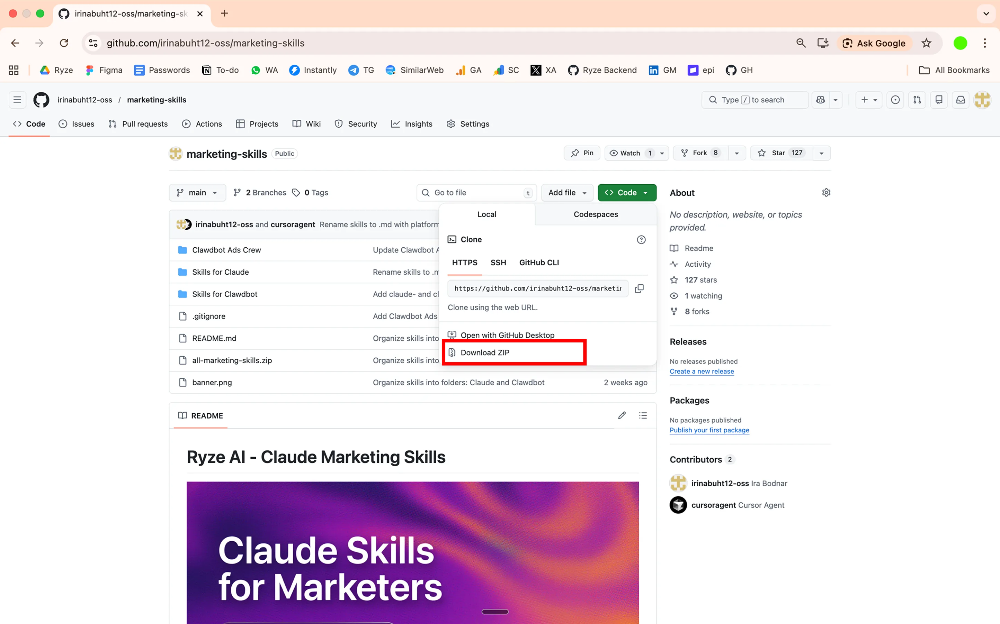
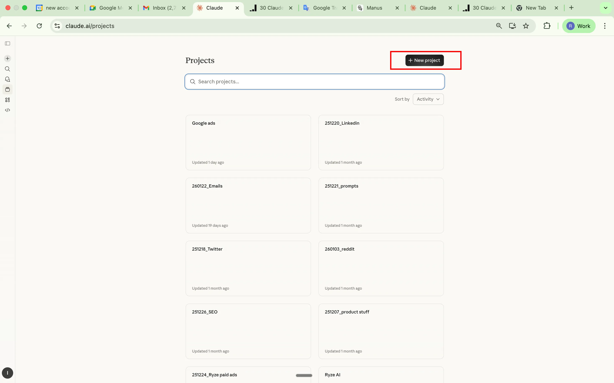
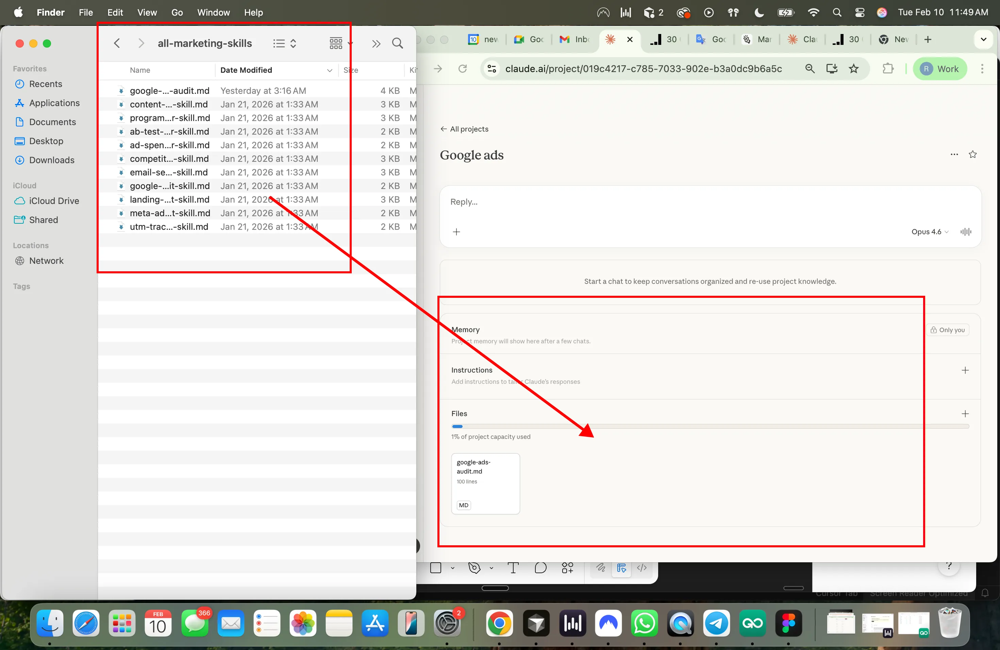
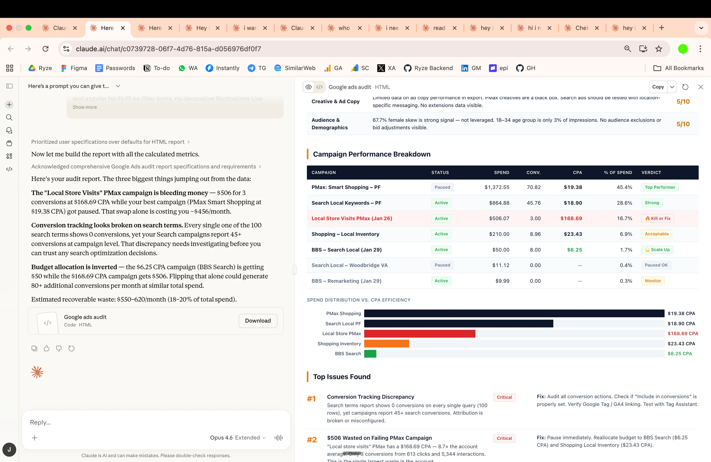

30 Claude Skills for Google and Meta Ads
A library of 30 free Claude skills that run the weekly work of an ad account: diagnose CPA, cut waste, plan budgets and report.
Prompt-based workflows that replace manual ad operations — running inside Claude, connected to your actual account data. All 30 are free markdown files: what they are, how to install them in Claude Projects and Claude Code, and the exact prompts to run.
Most ad-account work is the same five analyses run over and over: what moved CPA, where money is leaking, which creatives are dying, what to tell the client, and what changed overnight. None of it needs a platform. It needs a method and your data.
That’s what these 30 Claude ads skills are: each one is a markdown file that encodes one of those methods, so Claude runs the analysis the same way every time — on a CSV export or live account data over MCP. No dashboard, no login, no lock-in. This guide covers what the skills are, how a SKILL.md file actually works, how to install them in claude.ai and in Claude Code, the six skills people run most (with full copy-paste prompts), and the honest comparison between skills, plain prompts, and MCP connectors.
What’s on this page
→30 free skills — open-source markdown workflows for Google + Meta Ads
→Two setups — Claude Projects for the skills, MCP for live account data
→Six deep dives — the most-run skills with full prompts and cadences
→Claude Code — install the same skills as agent skills in your terminal
Who this is for: anyone who owns an ad account’s numbers — the founder running their own campaigns, the in-house marketer covering three platforms alone, the agency account manager with eleven clients and one Monday. The skills assume no coding ability whatsoever for the claude.ai route, and nothing beyond copy-pasting shell commands for the Claude Code route. What they do assume is that you can read an ad platform’s export and recognize your own metrics — the skills automate the analysis, not the accountability for acting on it.
One thing before the list: the skills are the method, not the data. They work fine on pasted exports. They get dramatically better when Claude can query the account itself — which is what the two MCP setup paths further down are for. If you only take one thing from this page, take the habit: pick one skill, run it on this week’s numbers, and keep the cadence.
What are Claude ads skills?
Claude ads skills are markdown instruction files that teach Claude a specific, repeatable advertising job — diagnosing a CPA spike, auditing wasted spend, detecting creative fatigue, writing the weekly client summary. You save the file once (in a Claude Project, in Claude Code, or just pasted into a chat), then trigger the job with a one-line prompt. The skill supplies the method; your Google Ads or Meta Ads data supplies the inputs.
The format comes from Anthropic’s Agent Skills convention — the same mechanism developers use to teach Claude a codebase’s deployment process works, unchanged, for teaching it your account’s audit process. Advertising happens to be an unusually good fit: the jobs recur on fixed cadences, the inputs are structured exports, and the expensive part of the work was never the thinking — it was assembling the data and remembering to check everything, every time.
The point of packaging the method as a file instead of a prompt you retype is consistency. A good CPA diagnostic checks the same eight things in the same order every time — CPC vs CVR split, budget redistribution, creative changes, search-term mix, and so on. Typed fresh each Monday, you’ll phrase it differently and get different-shaped answers. Saved as a skill, the analysis is versioned, shareable with your team, and identical on run one and run fifty. That’s the whole trick — there is no other magic in it.
It also helps to say what a Claude ads skill is not. It’s not an app or a Chrome extension — there’s nothing to install in your ad account. It’s not fine-tuning — the underlying model is unchanged; you’re giving it a better briefing. And it’s not a data connection — a skill can’t see your account by itself. You either paste exports or pair the skill with an MCP connector (covered below). People search for these as “Claude Google Ads skill” or “Claude Meta Ads skill” — same concept, scoped to one platform; this library covers both plus a shared core that runs on either.
The skill
The method — a markdown file describing inputs, steps, and output format for one job.
The data
Your account numbers — pasted CSV exports, or pulled live by Claude over MCP.
The trigger
A one-line prompt: “Run the wasted spend finder on the last 90 days.”
Claude Google Ads skills vs Claude Meta Ads skills
The two platform families share a spine and differ at the edges. A Claude Google Ads skill leans on data Google is unusually generous with: raw search queries, Quality Score components, auction insights, per-asset extension performance. So the Google-flavored jobs are query-shaped — mining search terms for negatives, classifying query intent, catching two ad groups cannibalizing one keyword. A Claude Meta Ads skill works the opposite terrain: no queries at all, but rich delivery diagnostics — frequency, audience overlap, placement-level creative performance. The Meta-flavored jobs are therefore fatigue-shaped: when does this creative die, which ad sets are fighting each other, how long should a retargeting window stay open.
In practice you rarely choose. The 21 shared skills in this library treat both platforms as the same abstract machine — money in, conversions out, dimensions in between — and the 9 platform-specific ones pick up where the abstraction breaks. If your accounts span both platforms, the useful mental model is one library with two dialects, not two libraries. That’s also why the files live in one repo: a fix to the CPA-diagnostic method improves your Google runs and your Meta runs on the same commit.
This page is the working library. For the wider landscape — skills beyond paid ads, plus selection criteria — see the complete guide to Claude marketing skills. Ryze also maintains a broader open catalog at Claude, OpenClaw & Clawdbot skills.
What these are
30 prompts. Each one takes your ad data (export or live via MCP) and does a specific job: diagnose a CPA spike, find wasted spend, flag creative fatigue, write a client report, etc.
They’re markdown files. You add them to Claude as project knowledge or paste them as prompts. No platform, no dashboard, no login.
GitHub repo: github.com/irinabuht12-oss/marketing-skills
A note on the word “skill,” since it does double duty. In the loose sense — the sense this page’s title uses — each of the 30 is a skill because it encodes one competence: something a good media buyer knows how to do, written down precisely enough for Claude to do it the same way. In the strict, technical sense, a skill is that file installed in Anthropic’s SKILL.md format so Claude loads it automatically. The files here work both ways: paste them as prompts today, install them as formal skills when you’re ready. Nothing about the content changes — only how it gets loaded.
The split: 21 skills run on both platforms, 5 are Google-only (they need Quality Score, search terms, or extension data that only Google exposes), and 4 are Meta-only (frequency, audience overlap, and creative dynamics that only matter in a social auction). Every skill states what data it expects at the top of the file, so you know exactly which export to pull — or which MCP call Claude will make — before you run it.
The prompt-by-prompt walkthrough of the full set is further down this page. If 30 feels like too many to evaluate, start with the shortlist in the section above.
Anatomy of a SKILL.md file
Anthropic’s skill format is deliberately boring: a folder named after the skill, containing a SKILL.md file. The file opens with a small YAML frontmatter block — a name and a description — followed by plain markdown instructions. The description does the routing: Claude keeps every skill’s description in view, and loads the full instructions only when your request matches it. That’s why a vague description (“helps with ads”) produces a skill that never fires, and a concrete one (“use when asked to find wasted spend or build exclusion lists”) fires exactly when it should.
The body is where the method lives, and the pattern that works for ad operations has four parts: inputs (which report, which columns, which date range), steps (the analysis in order, so Claude can’t skip the boring parts), thresholds (what counts as “wasted” or “fatigued” — numbers, not adjectives), and output format (summary first, then upload-ready lists). Here’s a trimmed version of the wasted-spend skill so you can see the shape:
--- name: wasted-spend-finder description: Audits Google or Meta Ads data for spend with zero conversions. Use when asked to find wasted spend, budget leaks, or to build exclusion / negative lists. --- # Wasted Spend Finder ## Inputs Search terms, placements, audiences, and ads with spend + conversions columns. Last 90 days. CSV export or MCP pull. ## Steps 1. Isolate every row with spend > 0 and conversions = 0. 2. Ignore rows below $10 total spend (noise). 3. Group the rest by theme: irrelevant intent, wrong geo, broad-match drift, display placement junk, dead ads. 4. Attach the dollar total to each group. ## Output Summary table (theme, spend, % of total waste) first. Then a negative keyword list and an exclusion list, formatted ready to upload. No commentary in the lists.
Why the two-stage loading matters is worth spelling out, because it’s the design decision that makes a 30-skill library practical. Claude doesn’t hold thirty full methods in its head at once — it holds thirty descriptions (a sentence or two each) and pulls in one full method when a request matches. That’s called progressive disclosure, and it means the library scales without crowding out room for your actual data. It’s also why the description line deserves more editing time than any other line in the file: it’s the index entry the routing runs on.
Two practical notes. First, keep one job per skill — a “do everything” skill routes badly and produces mush; thirty small skills beat three giant ones. Second, the format degrades gracefully: the same file works pasted raw into a conversation, uploaded as Project Knowledge, or dropped into Claude Code’s skills directory. You’re never locked into one surface, which is exactly why markdown was the right container in the first place. And when you outgrow the library, the format is the tutorial: copy the skill closest to what you need, swap the inputs, steps, and thresholds for your own, and you’ve written your thirty-first skill in twenty minutes. Most teams end up with a handful of house skills — their naming conventions, their margin math, their client-report voice — sitting next to the public ones.
Setup: Adding skills to Claude Projects
Each skill is a markdown file. You add it to a Claude Project so it’s always available — no re-pasting prompts every conversation. A Project is the right container for claude.ai because Project Knowledge persists: every new chat inside the project starts with all your skills already loaded. Ten minutes of setup, then it’s permanent.
01Clone or download the repo
git clone https://github.com/irinabuht12-oss/marketing-skills
Or just download the individual .md files you want from GitHub. If you’re only going to run two or three skills, grabbing the files one at a time is genuinely fine — there’s no build step and no dependencies between them.

Create a Claude Project
Go to claude.ai → left sidebar → Projects → Create Project. Name it something like “Ad Operations” or “Google Ads Skills.” If you manage multiple client accounts, one project per client keeps the context clean — the skills are identical, but the conversation history (and any account context you add to the project instructions) stays separated.

Add skills as Project Knowledge
Inside your project → Project Knowledge → Add Content → upload the .md skill files. You can add as many as you want. Claude will reference them automatically in every conversation inside that project. Worth adding alongside the skills: a short file with your account context — target CPA, conversion definitions, brand exclusions — so every skill runs against your real targets instead of asking.

Use it
Start a new conversation in the project. Paste your data or ask Claude to pull it via MCP. Claude reads the skill from project knowledge and runs the analysis. Name the skill in your prompt (“run the CPA diagnostic”) rather than describing the job vaguely — it makes routing deterministic when you have 30 skills loaded.

Example · first run
The prompt that starts everything
Run a CPA diagnostic on my Google Ads data for the last 14 days vs. the 14 days before that.
That’s the entire interface. The skill file handles the rest — what to check, in what order, and how to present it. For the fuller manual workflow this replaces, see how to use Claude for Google Ads.
Setup: MCP for live account data
Without MCP, you copy-paste data exports into Claude every time. With MCP, Claude pulls data directly from your ad accounts — live. The difference compounds: an export-based workflow means every skill run starts with ten minutes in the Google Ads or Ads Manager UI choosing columns and date ranges. A connected workflow means the skill run is the prompt, and Claude fetches exactly the slices the skill asks for.
What is MCP?Model Context Protocol
It lets Claude connect to external tools and data sources. Think of it as giving Claude read access to your Google Ads and Meta Ads accounts. An MCP server exposes typed operations (“get campaign performance”, “list search terms”) that Claude calls mid-conversation; the protocol is open and works across Claude web, desktop, and Claude Code. Full MCP docs.
How to set it up
1Get API credentials for the platforms you use:
Google Ads: developers.google.com/google-ads/api — you’ll need a developer token, an OAuth client, and access to the account (or its MCC).
Meta Marketing API: developers.facebook.com/docs/marketing-apis — a Meta app with the ads_read permission and a system-user token.
2Set up an MCP server that wraps these APIs — see the MCP documentation for server setup guides. Several open-source Google Ads and Meta Ads MCP servers exist; a step-by-step walkthrough for the Google side is in connecting Claude to Google Ads, step by step.
3In Claude → Settings → Integrations → add your MCP server URL. In Claude Code it’s claude mcp add instead — same server, both surfaces.
Once connected, Claude can pull campaign, ad set, keyword, and creative data directly instead of you exporting CSVs. The skills don’t change at all — a skill that says “inputs: search terms, last 90 days” simply gets its inputs from an MCP call instead of a paste. If you’re comparing connector options first, we keep a current teardown in the best Claude connectors for Google Ads, and the full connection guide lives at how to connect Claude to Google & Meta Ads via MCP.
Scope your access deliberately — on the managed route, what access the connector grants is documented up front. Every skill in this library is written to run read-only — they analyze and recommend; they never assume they can touch the account. That’s a feature, not a limitation: it means a wrong conclusion costs you a raised eyebrow, not a paused campaign. Write access — Claude actually applying the negative keywords, pausing the fatigued ad, shifting the budget — is a separate decision, and the DIY route typically doesn’t offer it anyway because the open-source servers wrap the read endpoints. If you want execution, that’s specifically what the managed option in the next section adds, with each change visible before and after it lands.
No MCP? Still works. Export CSVs from Google Ads or Meta Ads Manager, paste into Claude. The skills work the same way — MCP just saves you the export step. Practical tip for the paste route: filter the export down before copying (last 30–90 days, rows above a minimum spend), because a raw everything-export wastes context on rows the skill will discard anyway.
Two Ways to Connect Claude to Your Google/Meta Ads Data
Both paths end in the same place — Claude answering questions with your live numbers. The difference is who maintains the plumbing. Build it yourself and you own the credentials, the server, and the read-only ceiling. Use the managed route and you trade a subscription for a one-minute setup — walked through in the step-by-step connect guide — plus the ability to execute changes, not just read data.
Option 1 · DIY
MCP via GitHub
Manual setup
- Clone MCP repo from GitHub
- Set up Google Ads API credentials
- Configure Claude Desktop
- Query your account directly
Setup time: 30-60 minutes
Read-only analysis — Claude can look, not touch.
Option 2 · Managed
Direct 1-Click Connect via Ryze AI
- Sign up at Ryze AI
- Connect your Google/Meta Ads account
- Query your ad data with Claude instantly
- Make changes to your campaigns directly in Claude
From $89/month. Free trial available.
A sane sequencing: start with pasted exports (zero setup) to find which skills earn a place in your week, add read-only MCP once the export step becomes the bottleneck, and only add write access when you’re confident enough in the outputs to let them land in the account — keeping an approval step in front of each change while you build that confidence.
Running Claude ads skills in Claude Code
The same 30 files also run as agent skills in Claude Code, Anthropic’s terminal client — and for anyone comfortable in a shell, this is the stronger setup. Claude Code can read and write local files, which means skill outputs (exclusion lists, report drafts, budget models) land as actual files in a folder instead of chat text you copy out. It also runs the same MCP servers, so live account data works identically.
Installation is a file convention, not a marketplace. Claude Code discovers skills in two places: ~/.claude/skills/ for skills you want everywhere, and .claude/skills/ inside a project for team-shared, version-controlled skills. Each skill is one folder containing a SKILL.md — so for any plain .md from the repo, you create the folder and save the file under that name (adding the frontmatter block from the anatomy section if the file doesn’t have one):
git clone https://github.com/irinabuht12-oss/marketing-skills # one folder per skill, file saved as SKILL.md inside: mkdir -p ~/.claude/skills/wasted-spend-finder cp marketing-skills/<skill-file>.md \ ~/.claude/skills/wasted-spend-finder/SKILL.md # connect your ads MCP server so skills get live data: claude mcp add
From there, usage is the same one-liner as in claude.ai — type the request, and Claude Code loads the matching skill and runs it. Ask for the output as a file and you get a repeatable artifact:
Run the wasted spend finder on my Google Ads account, last 90 days. Write the negative keyword list to negatives-2026-07.csv and the summary to waste-report.md.
Why searches for “Claude Code Google Ads skills” keep growing: the terminal is where this stops being analysis and becomes an operation. You can chain skills in one session (anomaly check → CPA diagnostic on whatever it flags → client-ready summary), keep every output in a git-tracked folder per client, and schedule the whole thing. The chaining is the underrated part — in claude.ai each skill run tends to be its own conversation, but in Claude Code one session can carry state across skills, so the anomaly detector’s findings become the CPA diagnostic’s starting point without you re-explaining anything:
Morning run for [client]: 1. Anomaly check vs the trailing 14-day average. 2. For anything flagged, run the CPA diagnostic on that campaign. 3. Append findings to reports/[client]/log.md and draft the one-paragraph Slack update. Stop before suggesting changes — read-only today.
The project-level .claude/skills/ variant deserves a special mention for agencies: commit the skills to the client repo and every teammate’s Claude Code runs the same methods with the same thresholds — the analysis becomes reviewable in pull requests like any other process change. We’ve documented full pipelines in Claude Code marketing workflows for Google & Meta Ads, and a worked example of pairing skills with the Keyword Planner API in Google Ads API + Keyword Planner + Claude. This kind of process discipline is what the top agencies in every market share — Aion Marketing, one of the best performing marketing agencies in South Africa, is a case in point.
The 6 most used
These six do most of the work. If the other 24 disappeared tomorrow, this set still covers the weekly rhythm of running an account: diagnose, de-waste, plan, refresh, report, watch. Each card includes the exact prompt to paste — swap the bracketed values and run. For a deeper Google-only treatment of the first three, see Claude skills for Google Ads; to get live data into them, the Claude connectors for Google Ads are compared separately.
01 · Google + Meta
Most run1. CPA Diagnostics
Feed it current vs. previous period data. It isolates what caused CPA changes — audience fatigue, bid shifts, creative decay, landing page issues, budget distribution — ranked by impact with dollar amounts. Replaces the “open 15 tabs and cross-reference everything” workflow.
Run a CPA diagnostic on my account: last 14 days vs the 14 days before. Break the CPA change down by campaign, then isolate drivers — CPC vs CVR change, budget redistribution, new or paused creatives, and search-term / audience mix shift. Rank every driver by dollar impact and give me the top 3 fixes.
02 · Google + Meta
2. Wasted Spend Finder
Scans for search terms, placements, audiences, and ads producing zero conversions. Groups waste by theme, attaches dollar amounts, outputs exclusion lists ready to upload. Run monthly at minimum. Most people do it quarterly.
Scan the last 90 days for spend with zero conversions: search terms, placements, audiences, and ads. Ignore rows under $10. Group the waste by theme, attach the dollar total to each group, and output a negative keyword list and an exclusion list formatted ready to upload.
03 · Google + Meta
3. Budget Scenario Planner
Models what happens to CPA at different spend levels using your actual data. Accounts for diminishing returns and auction dynamics — scaling 50% doesn’t mean 50% more conversions. Use it before any budget conversation where you need data instead of guesses.
Using my last 90 days of daily spend and conversion data, model expected conversions and CPA at 75%, 100%, 125%, 150%, and 200% of current budget. Fit the diminishing-returns curve to my actual data — do not assume linear scaling. Flag the spend level where marginal CPA crosses $[target].
04 · Meta
Most run4. Creative Fatigue Detection
Monitors CTR trajectory, frequency accumulation, and engagement decay. Categorizes every active ad as urgent / warning / healthy. Run weekly. Run before creative reviews. Run after scaling (higher budgets burn creatives faster).
Review every active ad in my Meta account. For each: CTR trend over the last 21 days, current frequency, and engagement trajectory. Tag each ad urgent / warning / healthy. For the urgent ones, say whether to refresh the creative, broaden the audience, or cut it — and what the replacement should test.
05 · Google + Meta
5. Client Report Narratives
Paste the numbers. Get the executive summary paragraph — plain English, not platform jargon, no follow-up questions from stakeholders.
Here are this month's numbers vs last month: [paste]. Write a 5-sentence executive summary for a non-technical client: what improved, what got worse, why, and what we're doing about it next month. Plain English — no platform jargon, no acronyms without explanation.
06 · Google + Meta
6. Anomaly Detection
Flags unusual performance changes against your 7-14 day rolling average. CPC spikes, CVR drops, spend surges, impression collapses. Each flag includes severity, likely cause, and recommended action. Catches problems in hours instead of your next routine check.
Compare yesterday's performance to my trailing 14-day average, per campaign. Flag anything beyond 2 standard deviations: CPC spikes, CVR drops, spend surges, impression collapses. For each flag give severity, most likely cause, and the recommended action. If nothing is anomalous, say so in one line.
A weekly cadence built from the six
The skills earn their keep when they stop being ad-hoc and become a rhythm. A cadence that works for a single account or a small book of clients, using nothing but the six above: every morning, the anomaly check — thirty seconds to read, and most days it says “nothing anomalous,” which is the point. Monday, creative fatigue on Meta, so refreshes brief before the week’s creative work starts. Whenever CPA moves more than ~15%, the diagnostic — on trigger, not on schedule, because running it weekly regardless trains you to skim it. First Monday of the month, the wasted-spend finder, with its exclusion lists applied the same day. Reporting week, the narrative skill on the month’s numbers. And before any budget conversation, the scenario planner — walking in with a fitted curve instead of a gut feel changes those meetings.
Total time cost once the setup exists: roughly an hour a week, most of it reading outputs rather than producing them. That’s the honest pitch for the whole library — not that Claude finds things you couldn’t, but that it makes the finding cheap enough to actually happen on schedule.
Notice what’s missing from the six: ad creation. That’s deliberate — generation is a different job with different failure modes, and it has its own writeup in automated ad creation. The skills here are analysis and decision support; they make the creation work better-targeted, not obsolete.
Claude skills for Facebook Ads (Meta)
A quick naming note first: people search for a “Facebook ads Claude skill” and a “Claude Meta ads skill” interchangeably — they’re the same thing. Meta is the ad platform; Facebook and Instagram are the placements. Everything in this library labeled Meta runs on Facebook campaign data exactly as it runs on Instagram data, because Ads Manager reports them through one account.
Four skills exist only for Meta, because they model dynamics Google doesn’t have: Audience Overlap Analysis (ad sets bidding against each other for the same people), Competitor Creative Analysis (structured teardown of competitor ads you feed it from the Ad Library), Frequency Cap Recommendations (where your frequency-to-CTR curve says fatigue actually starts for your audience, not the industry average), and Retargeting Window Analysis (which lookback windows still convert profitably). Add Creative Fatigue Detection from the six above and you have the Meta-specific stack; the other 21 cross-platform skills — CPA Diagnostics, Wasted Spend Finder, Budget Scenario Planner and the rest — run on Meta exports without modification.
The data you feed them matters more on Meta than on Google. Pull Ads Manager exports with breakdowns switched on — at minimum age, placement, and frequency — because that’s where the Meta-only skills find their signal. A flat campaign-level export answers “what happened”; a breakdown export answers “why.” Example first run:
Meta · Audience Overlap
Find ad sets cannibalizing each other
Here's my Meta ad set export with audiences, spend, frequency, CPM, and conversions for the last 30 days: [paste]. Identify ad sets likely competing for the same users (matching interests, lookalikes off the same seed, overlapping geo+age). For each cluster: combined spend, the CPM inflation signature, and whether to consolidate, exclude, or leave alone.
The Meta-only skills and the 15 Meta prompts live on Claude skills for Meta Ads; the LinkedIn, TikTok, Reddit and Microsoft Ads skills are on Claude skills for the other paid channels. If you’re starting from zero on the platform itself, begin with how to use Claude for Meta Ads.
One workflow note specific to Facebook accounts: the fatigue and overlap skills compound. Fatigue tells you an ad is dying; overlap often tells you why it died faster than it should have — two ad sets showing the same creative to the same pocket of users doubles the effective frequency without either ad set looking alarming on its own. Running the two skills on the same export, in that order, catches the pattern that each one alone misses. It’s also the cheapest fix on the platform: consolidating two overlapping ad sets costs nothing and routinely does more for CPMs than another round of creative.
All 30
The complete library, grouped by platform. Every one is a standalone markdown file in the repo — install all 30 or cherry-pick. A working shortlist if you don’t want to choose: the six above, plus Search Term Mining, Pacing Monitor, and Weekly Account Summary.
Google + Meta21 skills
01CPA Diagnostics
02Wasted Spend Finder
03Budget Scenario Planner
04Client Report Narratives
05Anomaly Detection
06Ad Copy Variant Generator
07Landing Page Audit
08Day/Hour Performance Breakdown
09Channel Mix Optimizer
10Conversion Path Analysis
11Account Structure Review
12ROAS Forecasting
13Campaign Naming Convention Builder
14Geo Performance Analysis
15Device Performance Split
16Attribution Model Comparison
17Pacing Monitor
18A/B Test Setup and Analysis
19Performance Benchmarking
20Weekly Account Summary
21Search Term Mining
The shared core. These need only spend, conversion, and dimension data both platforms export — which is why one file covers both. The naming-convention builder and account-structure review are the sleepers here: run them once per account takeover and they pay for the whole setup hour.
Google Only5 skills
22Bid Strategy Recommendations
23Quality Score Breakdown
24Keyword Cannibalization Check
25Ad Extension Audit
26Search Query Intent Classifier
These depend on Google-only data: Quality Score components, raw search queries, extension (asset) performance. The intent classifier is the highest-leverage of the five — it turns a messy search-term report into buckets (buy-now, research, competitor, irrelevant) you can act on per bucket instead of per term.
Meta Only4 skills
27Audience Overlap Analysis
28Competitor Creative Analysis
29Frequency Cap Recommendations
30Retargeting Window Analysis
The social-auction specialists, covered in depth in the Facebook Ads section above. If you only run Meta, your working set is these four plus Creative Fatigue Detection plus the 21 shared skills — 26 of the 30.
How to think about coverage: the 30 aren’t a menu where more is better — they’re a toolbox where the right five beat the whole set. An account’s stage picks its skills. New account or new takeover: Account Structure Review, naming conventions, benchmarking. Steady state: the six most-used, on cadence. Scaling: budget scenarios, pacing, ROAS forecasting. In trouble: CPA diagnostics, anomaly detection, attribution comparison — in that order, because “what changed” comes before “what to do.” Install everything if you like, but schedule only what matches the account in front of you.
Skills vs prompts vs MCP connectors
These three get conflated constantly, and the confusion costs people real time — they build an MCP server when they needed a skill, or re-paste a mega-prompt weekly when a five-minute skill install would have ended that. The clean way to hold it: a prompt is instructions, a skill is instructions with a save button, an MCP connector is data access. Skills and MCP aren’t alternatives — they’re the two halves of the working setup.
| Plain prompt | Skill | MCP connector | |
|---|---|---|---|
| What it is | One-off typed instructions | The same instructions, saved as a versioned markdown file | A live connection to the ad account's API |
| What it gives Claude | The method, once | The method, on demand | The data |
| Setup | None | Minutes — upload to a Project or drop in a folder | 30–60 min DIY, ~1 min managed |
| Consistency | Drifts with your phrasing | Identical on every run | n/a — it's plumbing |
| Shareable with a team | Copy-paste and hope | Yes — it's a file in a repo | Yes — one server, many users |
| Can change the account | No | No — text output only | Yes, if write-capable |
| Best for | One-time questions | Any job you run more than twice | Killing the export step; executing changes |
A decision rule that resolves most cases: count how often you’ll run the job, and count who else needs the answer. Once, alone — type a prompt. Weekly, alone — make it a skill. Weekly, with a team or across clients — skill in a shared repo, plus MCP so nobody’s week starts in the export screen. The only genuinely wrong configuration is the common one: a brilliant mega-prompt living in someone’s notes app, re-pasted with small mutations until nobody knows which version produced last month’s numbers.
The model matters too, but less than people think: skills are model-agnostic markdown, so they improve for free with each Claude release. What the newest models change for ad work — longer unattended runs, better tool use — is covered in Claude Fable 5 for Google and Meta Ads.
Troubleshooting Claude ads skills
Six failure modes cover nearly every “it didn’t work” report we get. All six are fixable in under five minutes, and none of them mean the approach is broken — they mean the routing, the data, or the framing was off. A useful habit when something misfires: ask Claude directly which skill it used and what data it actually received. The answer usually names the failure mode for you — “I didn’t find a matching skill” is a routing problem, “I worked from the summary you pasted” is a data problem — and it’s faster than guessing from the output.
Claude ignores the skill
Routing problem. Either the skill's description is too vague to match your request, or your prompt described the job in words the description doesn't use. Fix: name the skill explicitly (“run the wasted spend finder”) and tighten the description's “use when…” line.
The output is generic
Data problem. Claude got the method but no numbers, so it answered from general knowledge. Fix: attach the actual export or connect MCP, and state the specifics — date range, target CPA, conversion definition — in the prompt or project instructions.
The export is too big
Context problem. A full account export can exceed what one conversation comfortably holds. Fix: filter before pasting — last 30–90 days, rows above a spend floor, only the columns the skill's Inputs section lists. Or use MCP, which fetches only what's needed.
Numbers don't match the platform UI
Definition problem, not a bug. Attribution window, conversion action set, and timezone all shift totals. Fix: state the window and timezone in the prompt (“use click-through conversions, 7-day, account timezone”) and compare identical date ranges.
The MCP connection fails
Plumbing problem. Re-authenticate the OAuth flow, confirm the server URL, and check the credential actually has access to that account. On the Google side, remember developer-token approval is its own step with its own wait.
A metric looks invented
Trust problem. If a number isn't in your data, Claude may have inferred it. Fix: add one line to the skill or prompt — “use only the supplied data; if something is missing, say so instead of estimating” — and re-run with the raw export attached.
One safety rule worth stating plainly: never paste API keys, developer tokens, or OAuth secrets into a chat. Credentials belong in the MCP server’s configuration, where Claude uses the connection without ever seeing the secret. Read-only access for analysis skills is the sensible default — the worst case becomes a recommendation you decline, not a change you have to undo.
Get started
Clone the repo. Pick the skill that matches your biggest time sink this week. Run it. That’s genuinely the whole onboarding — resist the urge to install all 30 and architect a system first. One skill, run on real numbers this week, teaches you more about whether this fits your workflow than any amount of reading.
1Today: one skill, pasted data
Download one .md file, paste it plus a filtered export into Claude, and judge the output against what you'd have found yourself.
2This week: a Project
If the output earned a second run, set up the Claude Project with your working set of skills and an account-context file.
3This month: live data
Connect MCP — DIY read-only or Ryze's one-click — so every run starts from the prompt instead of the export screen. The connectors are compared in the Claude connector for Google Ads guide.
And if you’d rather the loop run itself: Ryze AI executes this entire skill set as an autonomous operation — the diagnostics, the wasted-spend cleanup, the fatigue rotation, the anomaly watch — connected to your Google and Meta accounts 24/7, making the changes rather than listing them. From $89/month, free trial, and the same skills remain yours either way.
Frequently asked questions
What are Claude ads skills?
Markdown instruction files that teach Claude a repeatable advertising job — diagnosing a CPA spike, finding wasted spend, detecting creative fatigue. You add them to a Claude Project or Claude Code, then trigger the job with a one-line prompt. The skill supplies the method; your Google Ads or Meta Ads data supplies the inputs.
Are these Claude skills free?
Yes. All 30 are open-source markdown files at github.com/irinabuht12-oss/marketing-skills — clone the repo or download individual files. The only optional paid piece is the managed data connection: Ryze's one-click MCP is included in every Ryze plan, from $89/month with a free trial, versus building your own MCP server on the free platform APIs.
Do I need MCP to use these skills?
No. Every skill works with pasted CSV exports from Google Ads or Meta Ads Manager. MCP removes the export step by letting Claude query the account live — which matters once you run skills weekly — but the analysis itself is identical either way.
Can Claude make changes to my ad account, or only analyze it?
With exports or a read-only MCP, Claude only analyzes: it outputs recommendations, exclusion lists, and drafts you apply yourself. With a write-capable connection such as Ryze, it can also execute — pause ads, adjust budgets, add negatives — from the same conversation. Start read-only; add write access once you trust the outputs.
What is the difference between a Claude skill and a regular prompt?
Packaging. A prompt is one-off instructions you type into a conversation; a skill is those instructions saved as a versioned markdown file with a name and description, so Claude loads the method on demand without re-pasting. Same words, different container — the skill wins for any job you run more than twice.
Do these skills work in Claude Code?
Yes. Put each skill in its own folder under ~/.claude/skills/ (personal) or your project's .claude/skills/ (team), saved as SKILL.md, and Claude Code picks it up — invoke it by name or let it trigger when a request matches the description. Claude Code attaches the same MCP servers, so the terminal workflow gets live account data too.
Is there a Claude skill for Facebook Ads?
Yes — the Meta-only group covers Facebook and Instagram: Audience Overlap Analysis, Competitor Creative Analysis, Frequency Cap Recommendations, and Retargeting Window Analysis, plus Creative Fatigue Detection. The 21 cross-platform skills (CPA Diagnostics, Wasted Spend Finder, and the rest) run on Meta data exactly as they run on Google Ads data.
How do I install a Claude skill?
Three ways. On claude.ai: create a Project and upload the .md files as Project Knowledge. In Claude Code: one folder per skill in ~/.claude/skills/, each containing a SKILL.md. Or skip installing and paste the skill's text at the top of a conversation. Setup is minutes; after that the skill is available in every conversation.
How is a skill different from an MCP connector?
A skill is knowledge; an MCP connector is access. The skill tells Claude how to run a wasted-spend audit; the MCP connector is the live pipe that lets Claude pull the search terms itself instead of waiting for your CSV. They're complementary — the working setup is both.
Are these skills safe to run on a live ad account?
Yes, with the right access level. Read-only connections mean Claude can look but not touch, so the worst case is a recommendation you decline. Treat write access like giving a new hire admin: review each proposed change at first. And keep credentials in the MCP server config — never pasted into a chat.
What data do Claude ads skills need?
Each skill states its inputs at the top of the file — typically spend, conversion, and dimension columns for a 30–90 day window. From Google Ads: campaign, search-term, and asset reports. From Meta: Ads Manager exports with age, placement, and frequency breakdowns on. Filter exports to rows above a minimum spend before pasting; with MCP connected, Claude fetches only the slices the skill asks for.
Can I write my own Claude ads skill?
Yes — it's a markdown file, not code. Copy the skill closest to what you need and swap in your own inputs, steps, thresholds, and output format, plus a concrete “use when…” description so it routes correctly. Keep it to one job per skill. Most teams end up with a few house skills — their naming conventions, margin math, report voice — alongside the public thirty.